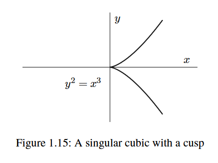

Hilbert’s Nullstellensatz: Integral Extensions Day 1
\[ \newcommand{\bA}{\mathbf{A}} \newcommand{\NN}{\mathbf{N}} \newcommand{\ZZ}{\mathbf{Z}} \newcommand{\RR}{\mathbf{R}} \newcommand{\PP}{\mathbf{P}} \newcommand{\QQ}{\mathbf{Q}} \newcommand{\FF}{\mathbf{F}} \newcommand{\CC}{\mathbf{C}} \newcommand{\cO}{\mathcal{O}} \newcommand{\cX}{\mathcal{X}} \newcommand{\fa}{\mathfrak{a}} \newcommand{\fb}{\mathfrak{b}} \newcommand{\fm}{\mathfrak{m}} \newcommand{\fp}{\mathfrak{p}} \newcommand{\fP}{\mathfrak{P}} \newcommand{\fq}{\mathfrak{q}} \newcommand{\id}{\mathrm{id}} \newcommand{\sB}{\mathscr{B}} \newcommand{\sF}{\mathscr{F}} \newcommand{\sG}{\mathscr{G}} \newcommand{\vp}{\varphi} \newcommand{\sli}{{s_l}_i} \newcommand{\smi}{{s_m}_i} \newcommand{\HomC}{\text{Hom}_{\mathscr{C}}} \newcommand{\mf}{\mathscr{F}} \newcommand{\Spec}{\text{Spec}} \newcommand{\Spa}{\text{Spa}} \newcommand{\Spf}{\text{Spf}} \newcommand{\SL}{\text{SL}} \newcommand{\Frac}{\text{Frac}} \]
Any reader who believes I have missed even one day of daily math posts is hallucinating a horrible nightmare world completely disconnected from reality and should work on waking up as soon as possible.
In a hypothetical world where I had missed some posts, I would address that problem by breaking posts up into smaller ones to ensure I did something everyday. To avoid the problems that exist in said hypothetical world, I will implement this solution in the actual world to ensure that I continue my streak of daily posts.
All rings are commutative with 1.
Goal of this sequence of posts
We are going to prove Hilbert’s Nullstellensatz without the assumption that the base field \(k\) is algebraically closed. I will more or less follow the presentation from Chapter 5 of Daniel Coray’s Notes on Geometry and Arithmetic.
It would be difficult to overstate the importance of Hilbert’s Nullstellensatz and its consequences. In Coray’s words,
The most important consequence is the unity of algebra and geometry.
More precisely, we will (eventually) show that there is an equivalence of categories between the category of affine varieties over \(k\) and the category of reduced \(k\)-algebras of finite type.
Integral extensions
Definition and examples
Definition 1. Let \(R,S\) be rings and suppose that \(R\subset S\). An element \(s\in S\) is said to be integral over \(R\) if there exists a monic polynomial \[f=a_0+a_1x+...+a_{n-1}x^{n-1}+x^n\in R[x]\] such that \(f(s)=0.\) We say that \(S\) is integral over \(R\), or that \(S\) is an integral extension of \(R\) if every element \(s\in S\) is integral over \(R\). If \(R\) is an integral domain and \(S\) is its fraction field, we say that \(R\) is integrally closed if every element \(s\in S\) that is integral over \(R\) belongs to \(R\).
One can easily check that \(\ZZ\) is integrally closed in \(\QQ\). Thus, the notion of a ring integrally closed inside its fraction field generalizes the way \(\ZZ\) sits inside of \(\QQ\).
Example 1. \(\ZZ\subset \ZZ[i]\) is an integral extension of rings. More generally, for any squarefree integer \(d\neq 0\), the ring \(\ZZ[\sqrt{d}]\) is integral over \(\ZZ\) when \(d\equiv 2,3\mod 4\), and \(\ZZ[(1+\sqrt{d})/2]\) is integral over \(\ZZ\) when \(d\equiv 1\mod 4\). These are the quadratic integer rings. Each quadratic integer ring is integrally closed with fraction field \(\QQ(\sqrt{d}).\)
Example 2. The following example is drawn from Hartshorne Exercise I.3.17.
Whether a ring is integrally closed carries geometric meaning. Let \(Y=Z(y^2-x^3)\) be the cuspidal cubic curve, pictured below.
A variety \(Y\) is said to be normal if for all points \(P\in Y\), the local ring \(\cO_P\) is integrally closed. We will show that the cuspidal cubic is not normal by showing that the local ring of \(Y\) at the cusp fails to be integrally closed.

The coordinate ring \(A(Y)\) of this curve is isomorphic to the integral domain \(R=k[t^2,t^3]\) (\(R\) is a domain since it is a subring of the domain \(k[t]\)) via the map \(x\mapsto t^2\), \(y\mapsto t^3\). The local ring \(\cO_{P,Y}\) of \(Y\) at \(P=(0,0)\) can be identified with the rational functions on \(Y\) that are regular at \((0,0)\), which in turn we can identify with elements of the fraction field of \(R\) with denominator not vanishing at \(0\in \bA_k^1\), \(k[t]=A(\bA_k^1)\) (this is the local ring \(R_{(t^2,t^3)}\)).
The ring \(\cO_{P,Y}\) is not integrally closed. First, note that \(t^3/t^2=t\in \Frac(R)\), and in fact \(\Frac{R}=k(t).\) Since \(t\) is a root of the monic polynomial \(X^2-t^2\in R[X]\), \(t\) is integral over \(R\). However, I claim that we cannot write \(t\) as a rational function \(f(t)/g(t)\) with \(f,g\in k[t^2,t^3]\) and \(g(t)\) not vanishing at \(0\).
Since \(t\) cannot be written as an element of \(\Frac(R)\) with denominator not vanishing at \(0\), i.e. \(t\notin R_(t^2,t^3)\), we see that \(R_{(t^2,t^3)}\) is not integrally closed. Hence the local ring \(\cO_{P,Y}\) is not integrally closed.
An easy lemma
Lemma 1. If a ring \(R\) is a unique factorization domain, then \(R\) is integrally closed.
This is more or less exactly the proof in Coray, Lemma 5.1.4.
Proof. Let \(K\) be the fraction field of \(R\) and let \(x\in K\) be integral over \(R\). Then we have \[a_0+a_1x+...+a_{n-1}x^{n-1}+x^n=0\] for some \(a_0,a_1,...,a_{n-1}\in R\). Since \(R\) is a unique factorization domain, there exist unique relatively prime elements \(a,b\in R\) such that \(x=a/b\), and the equation above becomes \[a_0+a_1\frac{a}{b}+...+a_{n-1}\frac{a^{n-1}}{b^{n-1}}+\frac{a^n}{b^n}=0.\] Multiplying by \(b^n\) on both sides gives \[a_0b^n+a_1ab^{n-1}+...+a_{n-1}a^{n-1}b+a^n=0,\] and therefore \[a^n=-(a_0b^n+...+a_{n-1}b^{n-1});\] in particular, we conclude that \(b|a^n\). This implies that any irreducible factor of \(b\) divides \(a\). Since \(a,b\in R\) are relatively prime, \(b\) must be a unit of \(R\), and therefore \(a/b=ab^{-1}\in R\).
\(\square\)
In the next post we will prove some general facts about integral extensions, and discuss some applications in basic algebraic number theory and algebraic geometry.